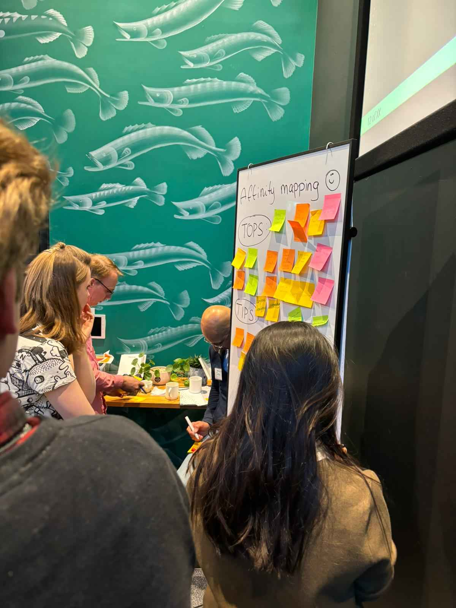
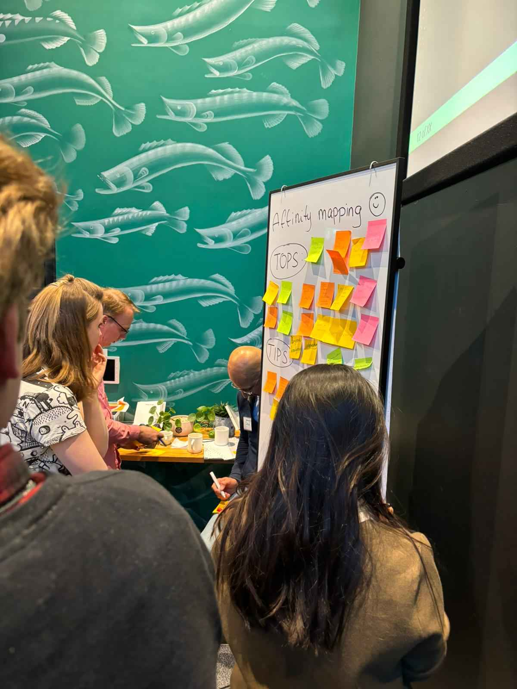

This is where you will find everything I’ve done for the learning outcome research this semester, in greater detail.
In class, we learned about Affinity Mapping, a technique for organizing research on a certain topic. Initially, we had a group task in which the entire class examined the popular website "bol.com". Each student wrote down website advice and recommendations, which we then put on a whiteboard to construct our first affinity map. This exercise helped us grasp the website's strengths and drawbacks from a variety of angles.
Later, we split into our project groups and repeated the process for different websites. This allowed us to apply the Affinity Mapping technique in smaller teams, fostering collaboration and deeper insights into each website's user experience and design elements.
Reflecting on this experience, I thought Affinity Mapping to be an effective method for acquiring a comprehensive understanding of website usability and design. It not only encouraged active involvement and collaboration in our class, but it also provided practical tips for evaluating websites. By analyzing "bol.com" and other websites, I gained a better understanding of user-centered design concepts and the value of including multiple views in UX review. This knowledge has had a substantial effect on my approach to building interactive media, emphasizing the iterative process and collaborative brainstorming as effective ways to improve user experience.
Below you can see the different steps I went through.
Pre-Sorting
Post-Sorting
In class, we looked at information architecture, specifically how to organize and structure material on websites. As part of the learning process, we looked at the navigation bars of several websites. Each group recorded the links from these navbars and categorized them according to the sections they believed the connections related to.
The assignment was aimed to help us understand how different websites structure their content, as well as how people view and move through different sections. By comparing and discussing our categories, we learned about successful information organization and user-friendly designs. This hands-on approach highlighted the importance of clear and straightforward navigation in improving the user experience.
Reflecting on this assignment, I understood how important Information Architecture is in expressing user interactions with digital platforms. Analyzing real-world navigation structures not only helped me comprehend IA ideas, but it also highlighted the problems and concerns involved in designing appropriate user journeys. The assignment highlighted the importance of user research and iterative design in creating cohesive and user-centric information architectures. Moving forward, I plan to apply this information to my interactive media projects, prioritizing usability and increasing overall satisfaction for clients.
Below you can see the different steps I went through.

1st Result


2nd Result
As part of our project, our group had the opportunity to put our knowledge of Affinity Mapping into practice with our client, Lighttown Speakers. We visited the club and engaged directly with its members to gather their insights and feedback.
We asked members to provide their thoughts on various aspects of the club's website, writing down their tips and tops on sticky notes. We then collaboratively organized these notes on a board to create an affinity map, categorizing the feedback into common themes and areas for improvement.
This practical application of Affinity Mapping provided valuable insights into the user experience from the perspective of actual users. We discovered key areas that needed improvement, such as improving ease of use, creating a separate website for clarity, and making the website more visually appealing. This direct feedback was crucial in guiding our design decisions and ensuring that the final product met the needs and expectations of the Lighttown Speakers members.
Reflecting on this experience, I recognized the power of user-centered design techniques like Affinity Mapping in discovering doable changes. Interacting directly with stakeholders allowed us to understand their pain points and preferences firsthand, which significantly influenced our project's direction. This hands-on approach not only helped our understanding but also highlighted the importance of iterative feedback loops in refining user experiences. Moving forward, I aim to continue using such techniques to create useful solutions that resonate with end-users and achieve project objectives effectively.
Below you can see the different steps I went through and a video of the clients actually working on it.

Start
 

Midway

Result


Tips & Tops
I made a quick analysis of AI translation tools that can help Eindhoven RockCity bridge language barriers and reach a broader audience. The document outlines various AI tools such as Google Translate, Microsoft Translator, DeepL, IBM Watson Language Translator, Yandex.Translate, and Lingvanex, evaluating their accuracy in translating Dutch to English and highlighting their key features.
This assignment taught me the value of utilizing modern technology to increase communication and usability in an international environment. Understanding the capabilities and limitations of each tool taught me how to select the best solution for certain translation needs. The research also demonstrated the importance of evaluating and modifying translated information to guarantee accuracy and cultural sensitivity.
I did this research to assist Eindhoven RockCity in efficiently engaging with the diverse community of Eindhoven, illustrating how AI may improve outreach efforts. By doing this research, I hope to demonstrate my ability to apply technical knowledge to real-world challenges while also helping ensure the success of local organizations.
As I reflected on this research, I recognized how powerful AI is in breaking down language barriers and facilitating internationally connection. It was exciting to learn about the nuances of various AI translation applications and how they can be used in improving user experience and accessibility. It also confirmed my belief in technology's ability to promote inclusivity and cultural interaction.
Below you can see a PDF for more detail.
As part of my project, I conducted research to develop a comprehensive content strategy for Eindhoven Rockcity. My goal was to understand the target audience, define the objectives, and determine the best platforms and times to engage with the audience.
I wanted to raise brand awareness in the local music community, connect with fans, musicians, and industry professionals, promote local events, and position Eindhoven Rockcity as a leading authority in the local music scene. The strategy involved writing profiles and conducting interviews with local musicians, covering concerts, giving behind-the-scenes information, and offering educational materials.
We aimed to increase brand awareness within the local music community, engage with fans, musicians, and industry professionals, promote local events, and establish Eindhoven Rockcity as a leading authority in the local music scene. The strategy included creating profiles and interviews with local bands, covering events, providing behind-the-scenes content, and producing educational material.
This content would be given through a variety of platforms, including a website blog that is updated on a regular basis, an active social media presence, an email newsletter, podcasts, and community forums. Audience participation, timely replies to interactions, and coordination with local organizations would all help to increase engagement.
I also determined the optimal times to publish on social media to boost engagement, which were approximately 7:00 PM, 3:15 PM, and 8:41 AM. The best periods for specific sites such as Instagram and Facebook differed slightly, although they generally fell between the morning and late afternoon hours. This research was important in developing an approach to content creation and distribution for Eindhoven Rock City.
As I reflected on this assignment, I realized how important it is to perform thorough audience research and strategic planning when designing effective content strategy. Understanding the target audience's interests and behaviors allowed me to design our content such that it spoke to them appropriately. The research not only helped us choose platforms and content, but it also help with the time of posting, allowing me to maximize Rockcity’s reach and impact in the local music community.
Below you can see a PDF for more detail.